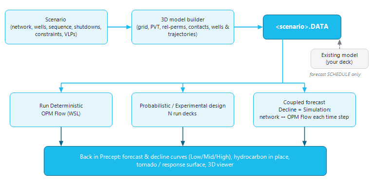

|
Reservoir simulation
1. Overview — what the simulation features do
Precept's decline curves and material-balance tanks describe the reservoir with a few numbers. When the distribution of pressure and fluids in the reservoir matters — where the wells are placed, a deviated or horizontal drain, water or gas breakthrough, injection support of one area — Precept can use a 3D reservoir simulation model instead. The simulation features cover the whole chain:
|
Feature
|
What it does
|
Page
|
|
Build the model
|
The 3D model builder builds a 3D grid (box, or from a structure map), its rock and fluid properties, initial contacts and pressure, and places the scenario's wells — vertical, deviated or horizontal — on the grid. It writes everything, with the scenario's drilling sequence, shutdowns and constraints, as an ECLIPSE-format deck (.DATA). It can also write the forecast part for a model you already have.
|
Simulation deck builder
|
|
Run it
|
Precept runs the deck with OPM Flow, the open-source reservoir simulator, and reads the results back into the scenario's forecast. The 3D viewer shows pressure and saturations over time.
|
Simulation deck builder, 3D visualiser
|
|
Explore the uncertainties
|
Probabilistic (Monte Carlo) runs for P90 / P50 / P10 forecasts, and experimental designs — tornado charts, history-match errors and response surfaces from a small, planned set of runs.
|
Experimental design
|
|
Couple it to the network
|
With Settings "Decline" = "Simulation", the Precept network forecast runs with the simulator in the loop: at each time step the network sets the wells' controls, the simulator answers with each well's inflow, and the two iterate until they agree.
|
Network - reservoir simulator coupling
|

Figure 1 — How the simulation features fit together: the scenario feeds the deck builder; the deck is run alone, in uncertainty studies, or coupled to the network forecast; all results come back to the scenario.
2. Two ways to work
•Conceptual model — Precept builds the whole model from a few inputs. Ideal for screening, green fields, well placement and trajectory studies, and for the coupled forecast. Precept runs it itself with OPM Flow.
•Existing model — you keep your company's model (for example built in Petrel and history-matched). Precept writes only its forecast part — well openings and closures, drilling dates, controls and the new wells' completions on your grid — in ECLIPSE 100, ECLIPSE 300 or Intersect IX format, plus probabilistic or experimental-design copies of the deck. You run them on your own cluster; Precept reads the results back for the analysis.
3. Turning the features on
1.Open Settings and, in the "Pre / Post Processing" box, tick "3D Simulation model". Under it, choose the simulator format used for an existing model ("ECLIPSE 100" by default, "ECLIPSE 300" or "Intersect IX").
2.The "3D Modelling" group appears on the main ribbon, with "Eclipse Well Control", "3D model builder" and "3D model visualization".
3.For a coupled forecast, also set "Decline" to "Simulation" in the "Potentials" box of Settings (see coupling).
4. Requirements
4.1 OPM Flow in WSL
Precept runs OPM Flow through WSL (Windows Subsystem for Linux), on the default WSL distribution of the PC. There is no Windows version of the simulator to install. The first time you click "Run Deterministic" on a PC without it, Precept shows the window "Precept - OPM Flow setup" with the one-time setup:
1.Open PowerShell as Administrator and run wsl --install, then reboot.
2.In the Ubuntu terminal, run: sudo apt-get install software-properties-common, sudo apt-add-repository ppa:opm/ppa, sudo apt-get update, sudo apt-get install mpi-default-bin libopm-simulators-bin python3-opm-common.
3.Reopen the deck builder and run again.
Installing WSL needs administrator rights on the PC: ask your IT department if you do not have them. Instead of the local WSL, "Run settings" can call a custom command — for example a remote Linux host or a cloud machine — as long as it leaves the run summary (.RSM) in the deck's folder. The coupled forecast always uses the local WSL.
4.2 A Simulation folder per scenario
Every scenario needs a Simulation folder, chosen in the deck builder's "Run settings". The deck, the simulator's outputs, the probabilistic and experimental-design runs and the coupled run are all written there. Use a different folder for each scenario.
4.3 For the coupled forecast
A deterministic forecast with the Precept optimiser, an oilfield asset (pressures in psig), and a deck built in the 3D model builder with the same well names as the network. See Network - reservoir simulator coupling.
4.4 Optional: the simulator manual
If the ECLIPSE reference manual is installed (for example under C:\ecl), or if you point "Run settings" to a manual PDF (such as the OPM Flow manual), the deck builder shows it in its MANUAL section and explains the deck's values under the mouse.
5. Typical workflow
1.Set up the scenario as usual: wells and network (Network modelling), drilling sequence, shutdowns, constraints, and the wells' VLPs.
2.Open "3D model builder", click "Run settings" and choose the Simulation folder.
3.Build the grid, PVT, relative permeabilities and initial conditions; place the wells (SCHEDULE > "COMPDAT") and link the VLP files.
4.Click "Generate .DATA", then "Run Deterministic". Check the run report (PRT) and the 3D model.
5."Load results" to use the simulated profiles in the scenario — or study the uncertainties with a Probabilistic or Experimental design study.
6.For a forecast that honours the network too, set Settings "Decline" to "Simulation" and run "Deterministic" from the main ribbon.
6. Where the results go
•Profiles: into the scenario's forecast and decline curves (potentials) for a Low, Mid or High case, then in the usual forecast results (Forecast results).
•Oil and gas initially in place: into the scenario's hydrocarbon in place (Low = 1P, Mid = 2P, High = 3P).
•3D results: in the Simulation folder, shown by "3D model visualization" (main ribbon) or "3D model" (deck builder) — always the scenario's most recent run, standalone or coupled.
|